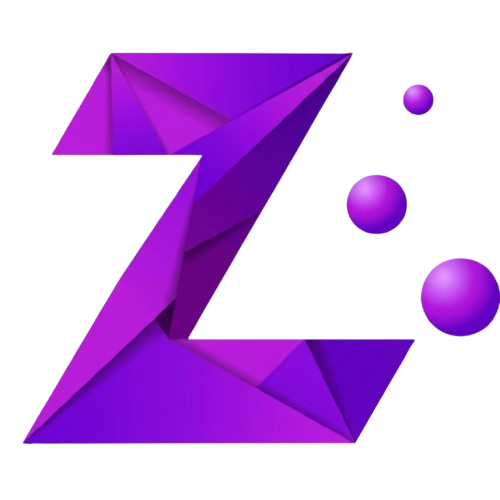

Una distribución Rolling Release basada en Arch Linux, optimizada para ofrecer máxima fluidez, bajo consumo de memoria y una experiencia limpia desde el primer arranque.
Todo el poder de Arch Linux sin configuraciones tediosas.